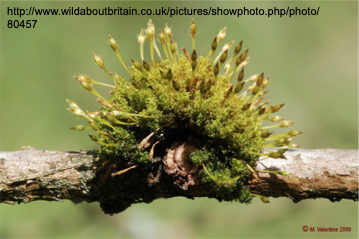

BIOL 210 Problem Set 3
Week 3, Sep 16-20
test.RmdYou can download an editable version of this Problem Set here.
General Instructions for Problem Sets
The goal of the problem sets is to give you practice thinking about and working with the concepts that we are covering. You should work solo to complete these assignments though you may want to do internet searches sometimes.
Before completing a problem set, you should review the content videos for the week and it may be helpful to complete those before the related class periods as well.
Use the link at the top of this webpage to turn in your completed assignment.
Problem Set Specifications
To earn an “S”:
- Completeness: Every question is thoroughly attempted.
- Accuracy: At least 80% of responses demonstrate correct logical reasoning, accurate quantitative calculations, and correct use of biological terms.
- Integrity & Sources: Citations are included where required, and work adheres to the Honor Code.
Related Readings
About Information Transmission (Mitosis and Meiosis)
-
Background reading from the open textbook Biology 2e at Openstax – you can read online or download a PDF.
- The Cell –> Chapter 10. Cell Reproduction
- Genetics –> Chapter 11. Meiosis and Sexual Reproduction
Schmerler, S and GM Wessel. 2011. Polar bodies—more a lack of understanding than a lack of respect. 78:3-8.
Wilkins, AS, and R Holliday. 2009. The evolution of meiosis from mitosis. Genetics 181:3-12.
About Life Cycles
-
Background reading from the open textbook Biology 2e at Openstax – you can read online or download a PDF.
- Biological Diversity –> Life cycle information is available in
taxon-specific chapters.
- Biological Diversity –> Life cycle information is available in
taxon-specific chapters.
From Gathering Moss, The Advantages of Being Small and Back to the Pond
Mable, BK, and SP Otto. 1998. The evolution of life cycles with haploid and diploid phases. BioEssays 20:453-462.
Questions
-
Cell Division Mechanisms and Disruptions
- Compare how genomic DNA is segregated during bacterial binary fission versus eukaryotic mitosis.
-
Predict the outcome for cell division in each disruption scenario:
- Spindle fibers fail to form during eukaryotic mitosis.
- The protein ring responsible for constricting the cell membrane/wall fails during bacterial cytokinesis.
-
Ploidy and Division across Developmental Stages
In fruit flies (Drosophila melanogaster), haploid gametes unite during fertilization to produce a diploid zygote, which develops through larval instars and pupation into an adult.Complete the table below for each stage or event:
Stage / Event Ploidy (\(n\) or \(2n\)) Division Process (Mitosis, Meiosis, or Neither) Sperm/egg production in adult flies Unfertilized egg cell Newly formed zygote Larval growth and molting Pupal tissue remodeling during metamorphosis Adult fly body (somatic) cells -
Meiosis Mechanics and Genetic Variation
- Explain how the arrangement and separation of chromosomes during Metaphase I and Anaphase I of meiosis differs from Metaphase and Anaphase of mitosis. How does this difference reduce ploidy?
- Identify the two distinct processes in meiosis that generate genetically unique daughter cells. For each, state the specific phase in which it occurs and explain how it creates new genetic combinations.
-
Comparative Life Cycles: Mosses vs. Vascular Plants
Examine the moss image below showing leafy green structures at the base and slender stalks topped with capsules extending upward. Refer to Chapter 25.3 in OpenStax and Gathering Moss.